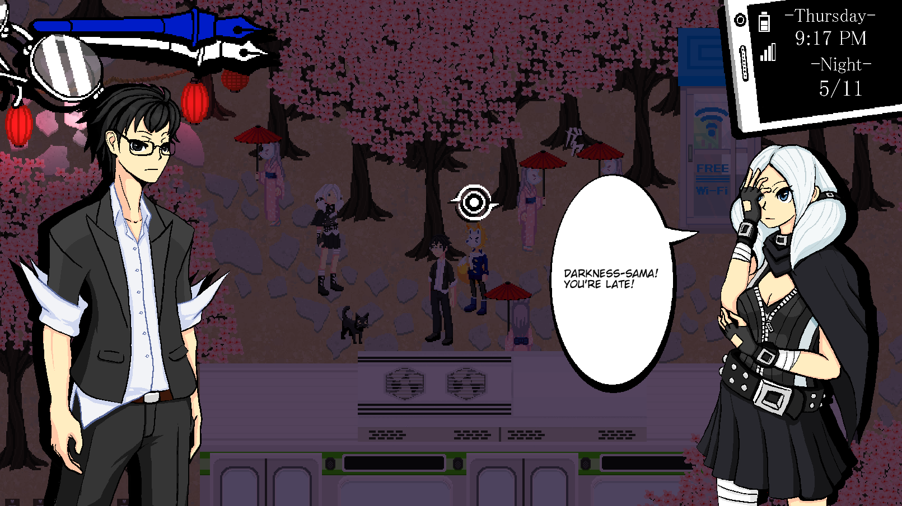
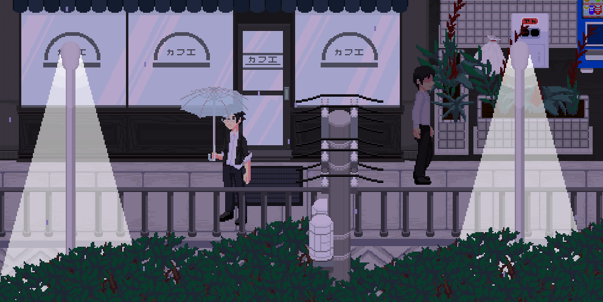
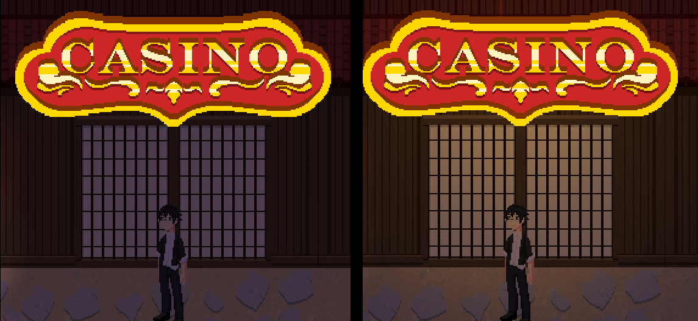
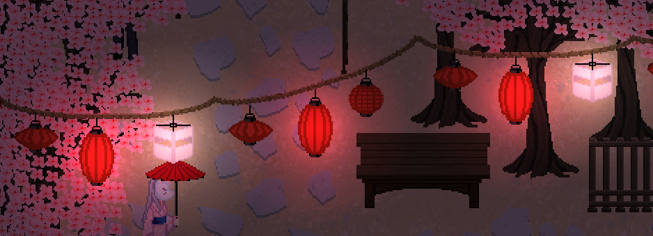
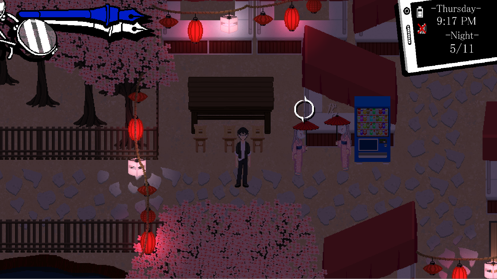
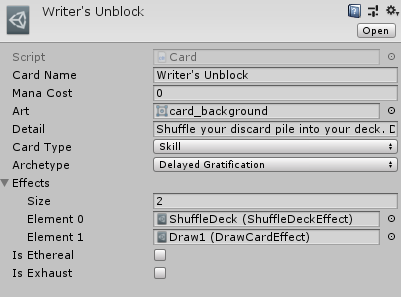

Rainfall Dev Blog #5: September 2018 - December 2018
Overview
The main focus for the last few months has been in the construction of various system enhancements related to Mari’s Dungeon. While production was slower than what we originally anticipated, quite a bit of time was spent on enhancing the foundation of the Card Game System and adding in new mechanics like Archetypes and the modular card effect system.
The construction of the dungeon itself, as outlined in this blog post, took up the majority of our time mostly due to the scope of the dungeon. Unlike the tutorial dungeon, Mari’s featured more enemy types, many more scenes, and a large variety of unique assets. The dungeon’s architecture was made to be highly interconnected and nonlinear with a set of a dozen lockon acknowledge scenes used to guide the player through the experience and tell the story of Mari and Jin’s conflict.

Lighting System

One of the largest learnings from Mari’s Dungeon was how to properly setup lighting effects. Up until now most of our lighting effects were achieved through having a singular ambient source of light in a scene and then applying it to every sprite that should be affected by light. This produced the above image which looks fine on its own but other light sources like the street lamps don’t add any additional light to the scene.
Inside Mari’s dungeon though, we specifically had several key parts that needed additional light sources to achieve the feeling of both a festival and gambling theme park. In the image above, you can see the before and after of the same area in the dungeon. Without an additional light source, the Casino neon lights stand out too much and resembles a graphical glitch, rather than a deliberate artistic choice, like it's missing the proper materials or shader. The inclusion of the lighting on the right blends the neon light properly into the rest of the building and provides an atmospheric ambient light effect on the door. Softening the disparity allows the sign to stand out without it looking like a rendering error.
The various lanterns that are strewn throughout the stage are one of its defining features. By themselves they are able to frame the scene and give it its flavor and memorability despite not being the central focus of any scene in the level. We achieved this effect by applying simple lighting to the lanterns, which significantly boost their flavor and provide the night-time festival feeling throughout the entire dungeon.

Modular Card Effect System

When designing our current card game system, one of the core design philosophies was to make a highly modular system that allows for us to easily design cards, decks, and mechanics and be able to so as quickly as possible. Speed is important as it allows us to iterate and improve much faster, allowing for higher quality game play and more room to refine and experiment with weird or non-traditional card effects.
We want to be able to take advantage of the digital medium as much as possible and include effects that could not be present in a physical card game. With this in mind we came up with the modular card effect system using Unity’s ScriptableObjects. We use our ScriptableObjects as a makeshift database, where we statically define what a card effect is and then statically define our cards as well, listing out what effects each card should execute when it's played.
Defining card effects in this way, provides us with the benefit of not having to define a card as a method that executes the same functions but instead is just a lookup set. If we change how shuffle effects work all cards will be affected that use that card effect since they themselves only contain a reference to the effect. We also only have to define a small subset of card effects and then we can combine these effects together in a list to create many different cards.
This is even better for defining decks too since decks also use the same lookup set to define the cards in the deck. So if a card is unbalanced we update just the singular card and all decks will be affected without changing anything on the deck level.
What's Next?
Now that Mari’s Dungeon is finished, we’re moving on to the planning of our third arc. Our next post will be introducing the new characters central to the main plot as well as a new relationship that’ll be available.
With this newest milestone, our core game-play has been firmly established, however it is still necessary to continue iterating on some of our older systems like various menu screens, lighting in past areas, and the implementation of sound effects and doujin text observations to various items in the city.
The final goal is to also fix all of the remaining bugs from the start of the game to the end of Mari’s Dungeon and produce a demo product that represents the vertical slice of our gamewhich, ideally, contains around a couple hours of content.